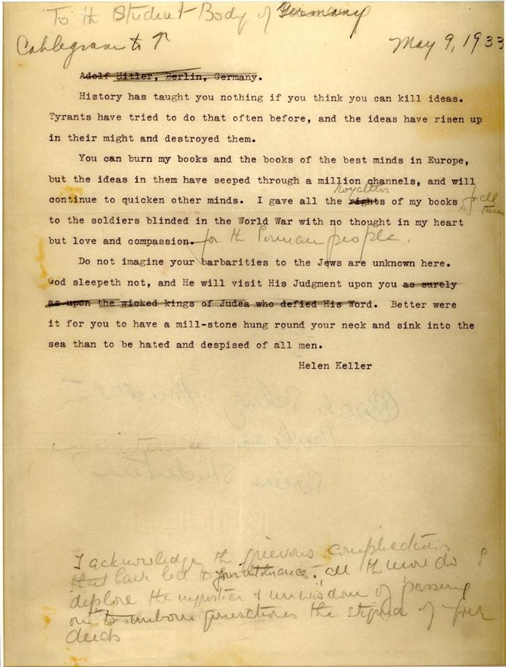

Civil Rights: You Can't Kill Ideas
Letter to Adolf Hitler / German students, 1933
View Full Letter
Guided Description
Justice is Immortal
In the early 1930s, Europe was witnessing the rise of totalitarianism– notably in Adolf Hitler's Nazi Germany. The Nazi’s practice of burning books became a symbol of the regime’s cultural and intellectual repression. Helen Keller addressed this very act of book burning with unwavering conviction. She wrote, "You can burn my books and the books of the best minds in Europe, but the ideas in them have seeped through a million channels, and will continue to quicken other minds." This statement represents her profound belief in the resilience of ideas. At a time when dissent against injustice was met with destruction, Keller's words stood as a beacon of hope and resistance. Her assertion that ideas are immortal, even in the face of physical annihilation, highlights her unwavering faith in the strength of human intellect and spirit. Keller's stance against the Nazi's book burnings resonates as a timeless reminder of the futility of trying to suppress knowledge and truth. Her words encapsulate a powerful message: that ideas, once unleashed, cannot be contained or extinguished by any force, no matter how tyrannical.
Next Section of "You Can't Kill Ideas"